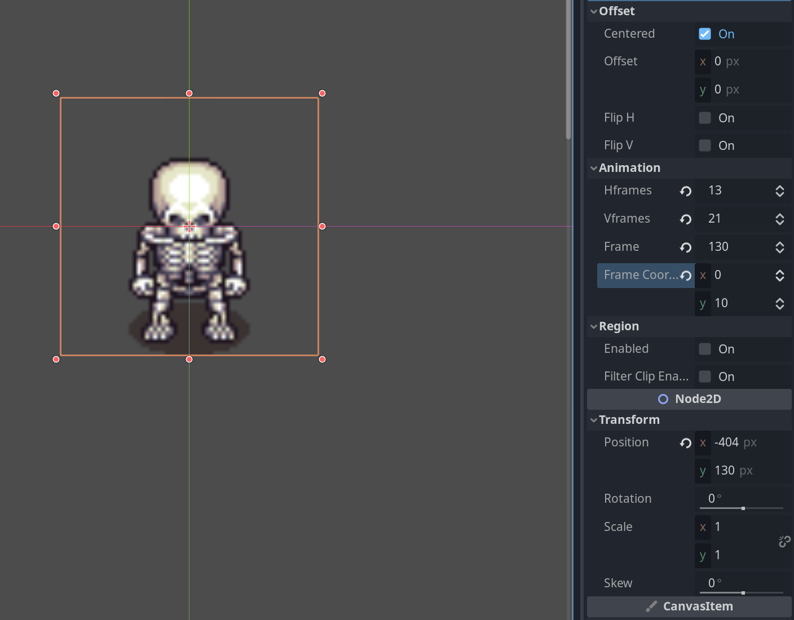
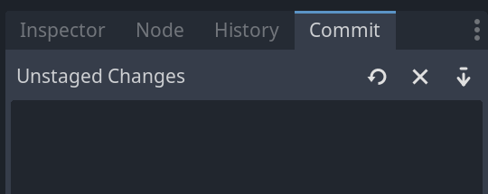
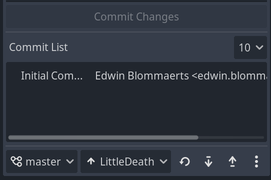

Right, time to crack on with this characters. I’ve loaded the sprite sheet into the Sprite2D node by dragging it over the Texture field. Now it’s a matter of figuring out how many H- and Vframes are in the animation, additionally, I need to figure out the frame coordinates.
I set the Scale to x 1 and y 1 but to do this I had to unlink them, then set the values then relink them again.
So this sheet has 13 Hframes and 21 Vframes. Because there are a possible 13 animation frames on the longest row and there are 21 rows.
To put the frame in the centre I entered x -404 and y 130 in the Transform.
Setting it like this centers on the top left-most animation frame. By setting the Frame Coordinates Y variable to 10 it sets us to the 10th row which is the forward walking animation frame.
I ended up with something like the following.

That completed I need to now add some code versioning, looks like there’s a plugin in the Godot editor for this let’s try and get that working.
I found the Wiki Guide a bit confusing so I’ve written some additional steps.
I am installing this on a Linux system:
- Install Git
- Configure your username and email in Git
$ git config --global user.name "your name"
$ git config --global user.email your@email.com - Generate a private key and add it to github
- Create a new Repository for your project.
- Download your Godot version plugin
- Create an ‘addons’ folder inside of your project folder. So something like the following.
projectname/addons - Extract the content of the folder inside of the zipfile, into the addons folder. So it should look something like
addons/godot-git-plugin. So we want the plugin in the folder not another folder. - Start your Godot 4 engine
- Open up your project
- Go to Editor > Editor Settings > Version Control > Version Control Settings
- Set your username which is found as the Account name of your github account
- Set the paths to your private and public key Should look something like this.
/home/yourusername/.ssh/id_rsa.pubfor the public key and/home/yourusername/.ssh/id_rsafor the private one. - Go to Project > Version Control > Version Control Settings and make sure ‘Connect to VCS’ is enabled. (The other data should already be filled in for you.)
- The above step will add a new tab next to the inspector, make this the active tab. 
- Near the bottom of the commit tab, you’ll find a new window that looks like the following. 
- Here you need to add a new remote. Click on the three dots, and select “Create New Remote”. In the ‘Remote Name’ field put the name of the repository you created earlier. In the Remote URL put the git@ url. Should look something like the following.
git@github.com:youraccountname/yourreponame.git - That’s it! You can now add changes, add a commit message, and Commit the changes, and then use the up arrow to push the changes. Or pull in changes someone else is working on by clicking the down arrow at the commit tab.